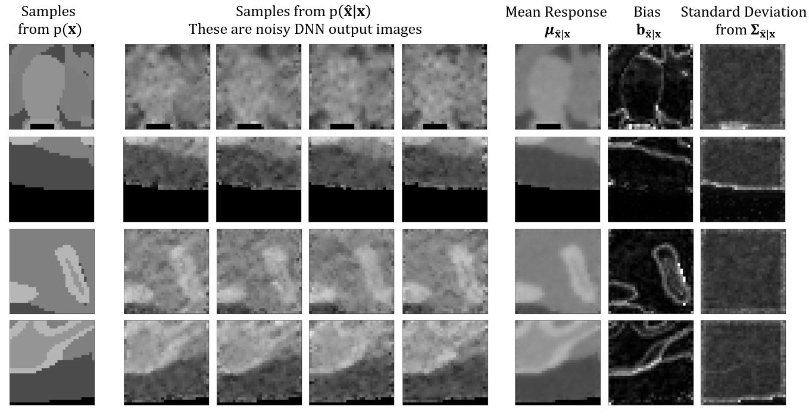

Tunable Neural Networks for CT Image Formation#
ABSTRACT#
Optimization of CT image quality typically involves balancing variance and bias. In traditional filtered back-projection, this trade-off is controlled by the filter cutoff frequency. In model-based iterative reconstruction, the regularization strength parameter often serves the same function. Deep neural networks (DNNs) typically do not provide this tunable control over output image properties. Models are often trained to minimize the expected mean squared error, which penalizes both variance and bias in image outputs, but does not offer any control over the trade-off between the two. In this work, we propose a method for controlling the output image properties of neural networks with a new loss function called weighted covariance and bias (WCB). Our proposed method uses multiple noise realizations of the input images during training to allow for separate weighting matrices for the variance and bias penalty terms. Moreover, we show that tuning these weights enables targeted penalization of specific image features with spatial frequency domain penalties. To evaluate our method, we present a simulation study using digital anthropomorphic phantoms, physical simulation of CT measurements, and image formation with various algorithms. We show that the WCB loss function offers a greater degree of control over trade-offs between variance and bias, while MSE provides only one specific image quality configuration. We also show that WCB can be used to control specific image properties including variance, bias, spatial resolution, and the noise correlation of neural network outputs. Finally, we present a method to optimize the proposed weights for a spiculated lung nodule shape discrimination task. Our results demonstrate this new image quality can control the image properties of DNN outputs and optimize image quality for task-specific performance.
INTRODUCTION#
Medical CT systems use the transmission of high-energy x-ray photons from multiple view angles to reconstruct the spatial distribution of an object’s attenuation properties. The resulting images are used by clinicians to inform clinical decisions, such as diagnosis, surgical guidance, or therapy planning. Ideally, CT images should be both precise and accurate to minimize errors in clinical decision making. In this work, we use random signal analysis to model the propagation of signals, noise, and bias in CT data processing, where precision is characterized by the variance of random variables, and accuracy is characterized by their bias.
The photon count in CT data processing is typically modeled as a Poisson-distributed random variable with a single parameter, \(\lambda\), which is both the mean and variance, due to practical engineering limitations that do not allow most x-ray sources to control the exact number of photons transmitted. Since the photon count is typically above one thousand, even for low-dose CT, the distribution is well approximated by a Gaussian-distributed random variable with mean \(\mu = \lambda\) and variance \(\sigma^2 = \lambda\). This quantum noise is one physical source of uncertainty leading to noise in CT measurements.
A full CT dataset can be expressed as a list of random variables or a random vector, where the elements of this vector may or may not be independently distributed depending on the type of detector and other factors. For example, modeling measurements as jointly Gaussian is a reasonable assumption for a flat-panel indirect detector, where the measurements of neighboring pixels are correlated due to light spreading in the scintillator layer.
CT is a computational imaging modality, meaning the measured data must be transformed into images via a reconstruction algorithm. In this work, we focus on deterministic image reconstruction algorithms, where a given set of input CT measurements always maps to the same output image. However, we do not assume that this functional mapping is linear for all cases, only that it is deterministic. Reconstruction algorithms can have different trade-offs between accuracy and precision. Some algorithms, such as ramp-filtered back-projection (FBP) or maximum-likelihood model-based iterative reconstruction (ML-MBIR), produce images with high accuracy but low precision, while others, such as FBP with an apodization filter or penalized-likelihood MBIR (PL-MBIR), reduce variance at the cost of some bias in the form of spatial blur.
Recent years have seen the introduction of machine learning methods, including deep neural networks (DNNs), for CT image formation such as reconstruction, denoising, and restoration. These methods produce highly favorable images by many quality measures, and the trade-off between variance and bias in output images is modulated by the contents of the training dataset, the choice of loss function, and other network training techniques. Different loss functions can be used for DNN training, such as mean-squared error (MSE) with respect to some supervised training target images. However, MSE does not provide any parametric weighting on different types of errors, so the relative emphasis on reducing variance or bias cannot be controlled by an imaging algorithm developer. Recently, several new deep learning training strategies have been proposed to improve CT image quality beyond MSE, such as by including a mathematical model of perceptual similarity or a discriminator loss term in the training loss function or using two noise realizations during training to reduce bias. We believe that high-quality CT images are those which optimize a trade-off between precision and accuracy according to the clinical requirements.
METHODS#
Probabilistic Model of CT Data Acquisition and Image Formation#
Consider a medical imaging scenario where a patient, \(\mathbf{X}\), undergoes a CT scan to collect noisy projection-domain measurements, \(\mathbf{Y}\), which are processed to produce a reconstructed image of the patient, \(\mathbf{\hat{X}}\). We define the vector space, \(\boldsymbol{\mathcal{X}} = \Re^{(N_\text{voxel} \times 1)}\), the domain of \(\mathbf{X}\) and \(\mathbf{\hat{X}}\), to be a lexicographic column vector representation of a three-dimensional voxelized image volume of linear attenuation coefficients. We define the vector space, \(\boldsymbol{\mathcal{Y}} = \Re^{(N_\text{projection} \times 1)}\), the domain of \(\mathbf{Y}\), to be a column vector representing projection-domain x-ray photon counts for each detector pixel and each view angle in the CT data acquisition. The patient, \(\mathbf{X}\), is one sample from a larger patient population consisting of a wide range of shapes, sizes, and anatomical features. Also, the measurements \(\mathbf{Y}\) are affected by quantum noise and so will not be the same for repeated data acquisitions. For this reason, we model \(\mathbf{X}\) and \(\mathbf{Y}\) as random vectors. Also, we assume that the reconstructed image, \(\mathbf{\hat{X}}\), is a deterministic function of \(\mathbf{Y}\) and is, therefore, a random vector as well. Our probabilistic model of CT image formation is given by the joint probability density function,
Notice that the joint distribution can be broken into three parts. The term \(p(\mathbf{x})\) represents the patient population, \(p(\mathbf{y}|\mathbf{x})\) is the physical model of data acquisition including noise, and \(p(\mathbf{\hat{x}}|\mathbf{y})\) represents image reconstruction, which we assume is a deterministic discrete-to-discrete transformation, \(f_\theta: \boldsymbol{\mathcal{Y}} \longrightarrow \boldsymbol{\mathcal{X}}\). That is, \(p(\mathbf{\hat{x}}|\mathbf{y}) = \delta(\mathbf{\hat{x}} - f_{\theta}(\mathbf{y}))\), where \(\boldsymbol{\theta}\) is a vector of reconstruction hyperparameters (e.g., FBP cutoff frequency or DNN weights). Note that we have also used the property \(p(\mathbf{\hat{x}}|\mathbf{y}, \mathbf{x})\) = \(p(\mathbf{\hat{x}}|\mathbf{y})\). Since the reconstruction is a deterministic function of the measurements, we know that \(\mathbf{\hat{X}}\) is conditionally independent of \(\mathbf{X}\), if given \(\mathbf{Y}\). We aim to apply this probabilistic model to understand and optimize the quality of images to improve expected health outcomes for patients.
Variance and Bias in Reconstructed Images#
The joint distribution of \(\mathbf{X}\) and \(\mathbf{\hat{X}}\) can be calculated by marginalizing over \(\mathbf{Y}\) as follows:
Note that this distribution is broken into two parts; \(p(\mathbf{x})\) is the patient population model, and \(p(\mathbf{\hat{x}}|\mathbf{x})\) is the end-to-end CT imaging system model, which captures both data acquisition and image reconstruction. Image quality metrics such as noise or spatial resolution are (typically patient-dependent) properties of an imaging system which can be derived from \(p(\mathbf{\hat{x}}|\mathbf{x})\).
Mean#
For example, the mean response of the imaging system is given by:
Bias#
The corresponding bias (defined as the expected error) is given by:
Covariance#
The covariance, which describes noise properties, is given by:
These expressions for bias and covariance describe two of the most important categories of image error. An imaging system with a high level of bias, \(\mathbf{b}_\mathbf{\hat{x}|x}\), is inaccurate on average. Note that this includes all forms of mean error, not only zero-frequency offset, as the term ``bias’’ is sometimes used. Common forms of bias include spatial blur and artifacts due to miscalibration or other mismatches between the model used for data processing and the true physical object. An imaging system with a higher covariance, \(\boldsymbol{\Sigma}_{\mathbf{\hat{x}}|\mathbf{x}}\) is imprecise and will produce noisier images which can make it harder to see clinically important features. The main topic of this work is a method to control the trade-off between variance and bias in reconstructed images in order to avoid potentially severe errors that negatively impact clinical decision-making. Samples from these distributions as well as the mean, bias, and standard deviation of output are shown in Figure~\ref{fig:biasVariance_example} to illustrate these mathematical terms. This example shows some common types of error, such as higher bias at edges, which corresponds to lower spatial resolution. The standard deviation map also shows higher noise inside the patient vs in the air regions, which may indicate the network has learned to implicitly identify air regions and remove almost all noise.

Patient Population Model#
The marginal distribution, \(p(\mathbf{x})\), models the population of patients. In practice, we do not have access to this distribution, but we can approximate expectations over this distribution using a dataset of patient images and assuming they are independent samples from \(p(\mathbf{x})\). Using a database of CT images is a very common strategy for data-driven methods such as deep learning \cite{wang2020deep}. However, with this approach, the reference images are reconstructed CT images rather than true patient anatomies. These reconstructed images have noise and bias (e.g., blur, artifacts, etc.) and if they are used as the ground-truth supervised labels, the DNN will be trained to replicate the same sort of errors in the training images.
As an alternative, we propose another method using a population of digital anthropomorphic phantoms, such as XCAT \cite{segars20104d}. The XCAT software takes a list of \(N_\text{anatomy}\) anatomical parameters (e.g., liver volume, trachea thickness) which we can collect into a vector space, \(\boldsymbol{\mathcal{Z}} = \Re^{(N_\text{anatomy}\times 1)}\). The XCAT phantom generator is then represented by a deterministic discrete-to-discrete transformation \(\boldsymbol{\mathcal{G}}:\boldsymbol{\mathcal{Z}}\longrightarrow \boldsymbol{\mathcal{X}}\). We model the anatomical parameters as a Gaussian distributed random vector \(\mathbf{Z}\) with mean \(\boldsymbol{\mu_z}\) and covariance \(D\{\boldsymbol{\sigma_z^2}\}\), where the \(D\{\cdot\}\) notation indicates the diagonalization of a vector. Those parameters are passed to the XCAT generator to create a population of ground-truth patient images with varied anatomies. This way, we can compute population-level statistics using sample expectations over these images. While XCAT phantoms are not entirely realistic in terms of texture and the full range of anatomical variations, diseases, and disorders, these anatomical models are useful. In particular, this methodology is illustrative of the overall technique and provides access to the ground-truth attenuation, which we will use to evaluate bias in reconstructed images. In the future, high-fidelity clinical images or more sophisticated anatomical models could be used to model the ground truth patient population more accurately.
Physical Measurement Model#
The measurement likelihood, \(p(\mathbf{y}|\mathbf{x})\), represents the physical model of CT data acquisition including noise. For this work, we will use the following nonlinear mono-energetic forward model with uncorrelated Gaussian noise as follows:
where \(\mathbf{A}\) is the forward projector describing line integral sampling geometry and \(\mathbf{B}\) is a projection-domain linear operator which can model gain and blur effects. The exponential operation is element-wise. The variance is set equal to the mean model, which is designed to approximate a Poisson distribution associated with quantum noise. Again, more sophisticated models may be adopted and applied using the same framework.
Image Reconstruction via Filtered Back-Projection#
The third term in equation \eqref{eq:joint_pdf} is \(p(\mathbf{\hat{x}}|\mathbf{y}) = \delta(\mathbf{\hat{x}} - f_{\theta} ( \mathbf{y} ))\), which represents image reconstruction. A common approach to reconstruct CT images is filtered back-projection with an apodization filter, which can be written as:
where \(\boldsymbol{P}_\sigma\) is a projection-domain linear operator consisting of, for example, projection weighting, ramp filtration, and an apodization filter. \(\mathbf{A^T}\) is the back-projector, which is the transpose of the forward-projector \(\mathbf{A}\). We use a Gaussian apodization filter, with the hyperparameter \(\sigma\) representing spatial-domain full width at half maximum. We will use this classical image reconstruction algorithm as a reference to evaluate our proposed method.
Image Reconstruction via Model-Based Iterative Statistical Estimation#
Another approach is to perform image reconstruction via a statistical estimation algorithm such as penalized-likelihood model-based iterative reconstruction (PL-MBIR) which is given by
Here, the first term is derived from the negative logarithm of \eqref{eq:likelihood} and encourages agreement between the image reconstruction and the measurement data, and the second term is a quadratic roughness penalty which encourages smoothness (and reduces noise). The operator, \(\boldsymbol{\nabla^2}\), is the discrete Laplacian, which is a type of high-pass filter and serves to put a penalty weight on higher spatial frequencies where higher noise is predicted by the model. We optimize this nonlinear weighted least squares objective function using the algorithm described in \cite{tilley2015model}.
The hyperparameter \(\beta\) can be viewed as a tunable dial which controls the trade-off between noise and spatial blur. This way, it is possible to have different protocols for applications with greater emphasis on either noise reduction or spatial resolution. Inspired by this general structure, we aim to provide a similar method of tunable control over output image qualities for deep learning based image formation models.
Image Reconstruction via Deep Neural Networks#
Another approach to CT image formation is to train a DNN for image reconstruction, restoration, or denoising. DNN models have numerous network weight parameters, \(\boldsymbol{\theta}\), which must be trained to minimize some loss function using large datasets of CT images. One of the most commonly used loss functions for deep learning image formation is mean-squared error (MSE) for which the network training process can be written as
The inner term is the conditional expectation, \(\mathbb{E}_\mathbf{\hat{X}|\mathbf{X}}[(\mathbf{\hat{X}}-\mathbf{x})^T(\mathbf{\hat{X}}-\mathbf{x})|\mathbf{x}]\) which can be expanded and written as a function of bias from \eqref{eq:bias} and covariance from \eqref{eq:covariance} as follows:
Note that this formula shows that MSE can be decomposed into the expected sum, \(\text{Tr}\Big\{\boldsymbol{\Sigma}_\mathbf{\hat{x}|x}\Big\}\), which is a sum of variances for each voxel, and \(\mathbf{b}_\mathbf{\hat{x}|x}^T \mathbf{b}_\mathbf{\hat{x}|x}\), which is the sum of squared biases. Therefore, training a network to minimize MSE can be written as
In practice, the minimizer is implemented via numerical optimization methods such as stochastic gradient descent. The expectation over \(\mathbf{X}\) is approximated by sampling a batch of patient images and computing the sample mean over the batch. Typically, for a given image in the database, \(\mathbf{X}=\mathbf{x_i}\), there is only one noise realization of \(\mathbf{Y}\) and so during training, only one realization of the output, \(\mathbf{\hat{X}}\), is available. Therefore, the expectation, \(\mathbb{E}_{\mathbf{\hat{X}}|\mathbf{X}}[(\mathbf{\hat{X}}-\mathbf{x})^T(\mathbf{\hat{X}}-\mathbf{x})|\mathbf{x}]\), must be replaced by the squared error for one sample \((\mathbf{\hat{x_i}}-\mathbf{x_i})^T(\mathbf{\hat{x}_i}-\mathbf{x_i})\). On the other hand, if multiple noise realizations of \(\mathbf{Y}\) and \(\mathbf{\hat{X}}=f_{\theta} ( \mathbf{y} )\) were available, it would be possible to directly apply \eqref{eq:bias} and \eqref{eq:covariance} to compute the sample bias and covariance as well as the optimization in \eqref{eq:MSE_training}. The next section presents a training scheme which uses multiple noise realizations to explicitly compute and control the variance and bias of DNN output images.